Rock with Android
了解安卓系统
安卓系统的八卦
安卓1.5版本叫Cupcake，2.3版本叫Gingerbread，最新的4.1-4.2叫Jelly Bean，4.4是雀巢的KitKat巧克力（并不是雀巢冠名，而是某核心工程师最喜欢吃KitKat）。具体见安卓版本历史，所以是一帮吃货搞出来的。
可以说2.3版本是稳定可靠的里程碑版本，也是应用开发者现在不得不兼容的版本，而4.0版本是统一了平板和手机的Holo风格，是迈向成熟的版本。即使据Google说4.x版本已经超过2.x版本的市场占有率了，开发者还是要兼容2.x版本一段时间。
和iOS不同的地方
- 真正的多任务
- 通知栏和Toast
- 桌面Widget
- 系统级分享和应用间互调
- 硬件特性
安卓是真正的多任务，意味着你真正可以后台做些事情，当然这也是安卓系统卡的一个原因。比如在WIFI时自动后台同步数据到服务器，后台音乐播放等。
需要注意的是：用户其实对后台比较敏感，所以要明确告诉用户你后台在做的是什么事情。
下拉通知栏是安卓开始就有特性，而且在4.1得到了增强，可以实现下面的效果。
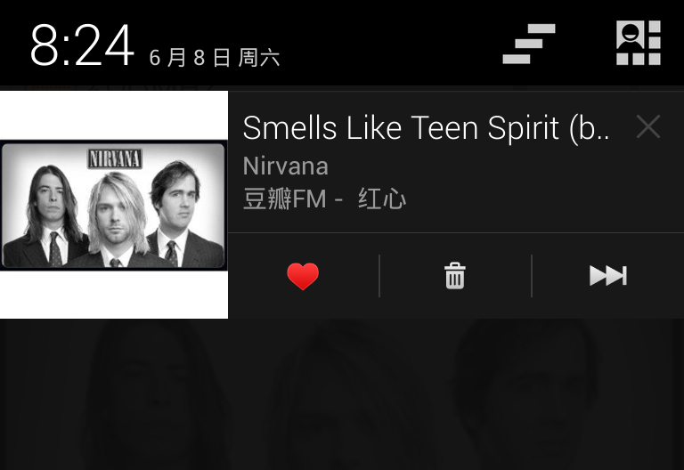 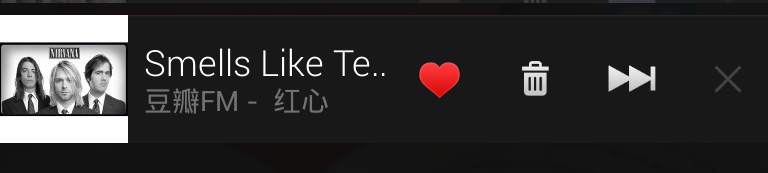Toast，呃，又是吃的，是安卓系统默认的轻量级提示，因为是默认是从底部弹出来的，还是比较符合名字的。

P.S. 如果你有机会build安卓源码的话，会发现启动build的命令叫lunch，而执行build叫bake...
Widget是某些Linux发行版或者某些桌面软件就有的概念和机制，安卓也有同样的特性，如下图。
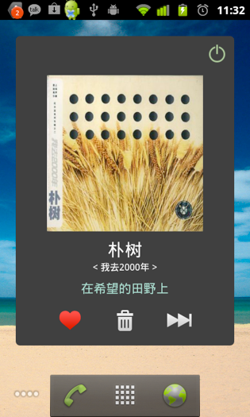电台的Widget比较复杂，一般都是作为功能的入口，如下图。
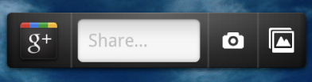另外在4.2系统里，引入了锁屏Widget，可以提供锁屏时的操作，更加方便了，如下图。
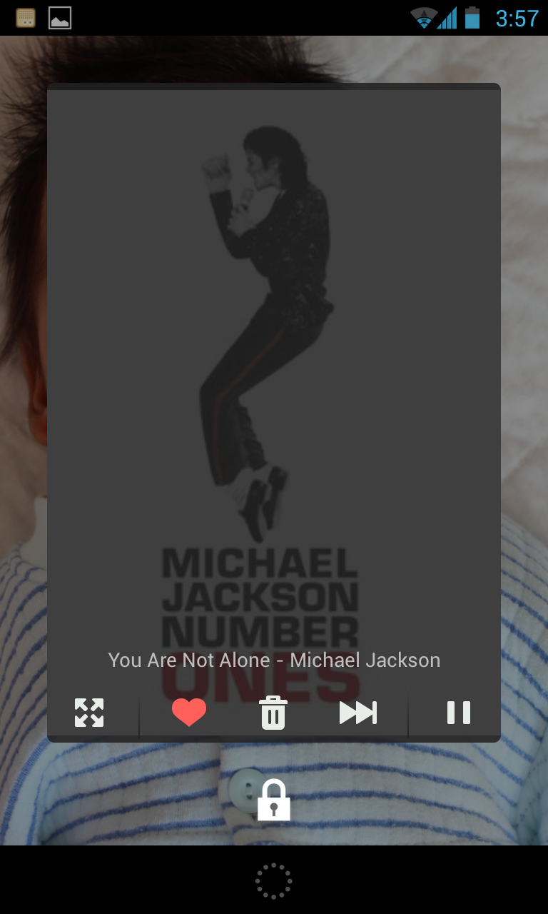在安卓里，应用间互相调用是一个轻操作，下图中的系统级分享也是基于这一特性的。多个应用相互配合完成一个任务是很常见的，也是可以好好利用的特性。
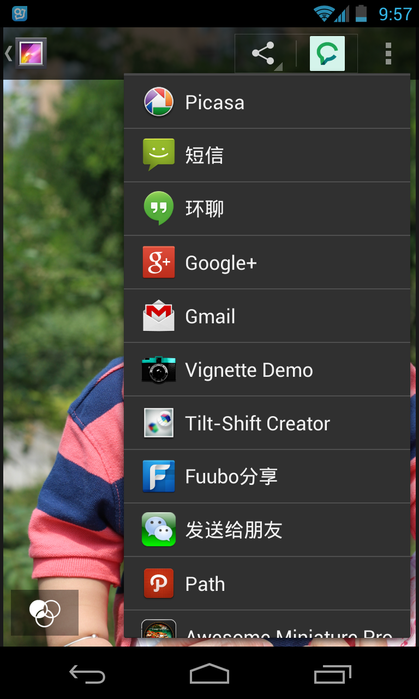除了常见的速度和温度等传感器，很多手机还配备了陀螺仪，压力和湿度传感器，还有GPS和NFC也是可以好好利用的。此外最普通的振动和LED灯也可以在通知时使用，得到更好的用户体验。下图为豆瓣FM通过NFC来分享歌曲时的界面：
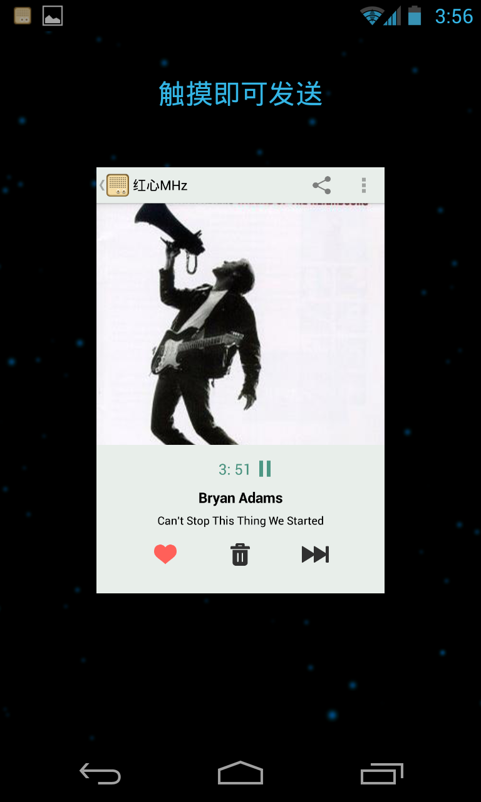Holo
大家都知道，安卓的UI一直是百花齐放的，根本原因是原生界面过于简陋。所以有Meizu和小米的偏iOS拟物风格，还有HTC的Sence，三星的Touch Wiz等等UI。而安卓4.0版本，Google从头定义和实现了Holo风格，有一整套的设计理念和设计语言。大家有兴趣可以看这篇Holo Everywhere了解更多。
另外推荐读下Android Design的设计理念部分。不想了解的人只知道，4.0开始，原生界面有了新的风格，如下图：
ActionBar
是安卓3.0(一个经常被忽略的版本)引入的新的导航方式，有Action button，Tab，Navigation List, Search, Share等操作，另外本身还提供不同的Mode。类似于iOS的NavigationBar，是最常用的导航方式，虽然不一定是最好的。
得益于JakeWharton的开源项目ActionBarSherlock，可以在2.x上同样使用Action Bar。
最新的好消息，在Android Support Library, revision 18 里引入了ActionBar！
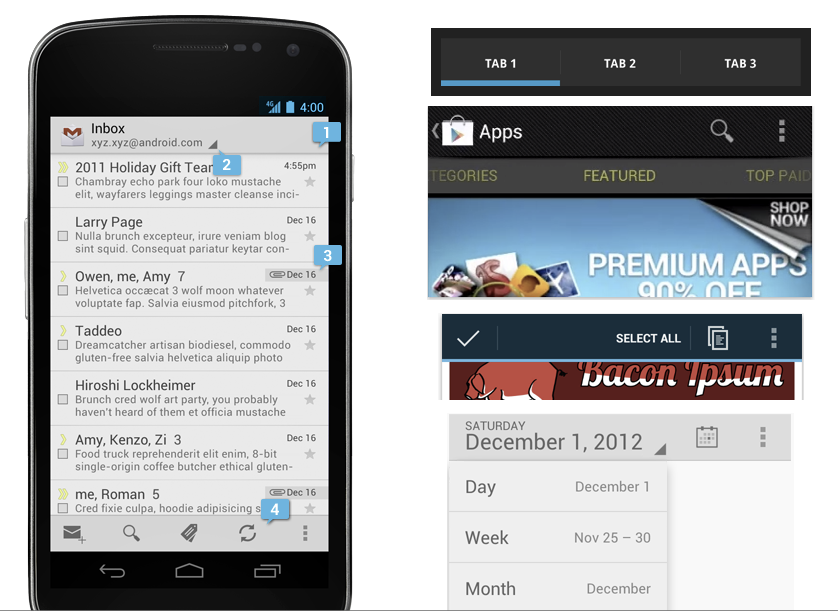扩展阅读Action Bar
Tabs and Pager
另外一种常见的导航模式是Tabs和Pager搭配使用，Google在android support包里面提供了Pager这一控件。如下图
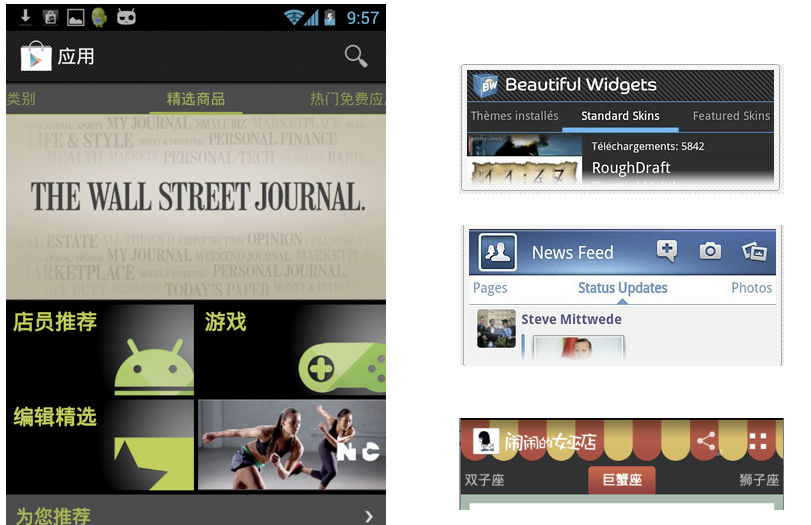同样推荐JakeWharton出品的一个组件：Android-ViewPagerIndicator，可以实现Pager更多的效果。
SlidingMenu
为了节省屏幕空间，侧滑菜单也是用的比较多的导航方式。如下图：
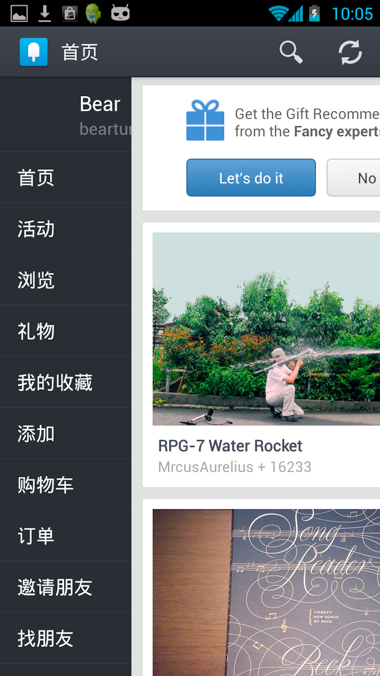 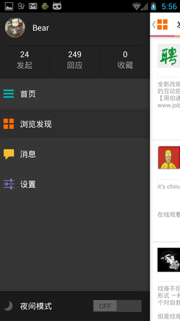比较推荐的是jfeinstein10的SlidingMenu
另外Google Plus里使用的Navigation Drawer也是类似的侧滑方案，具体可以见Navigation Drawer
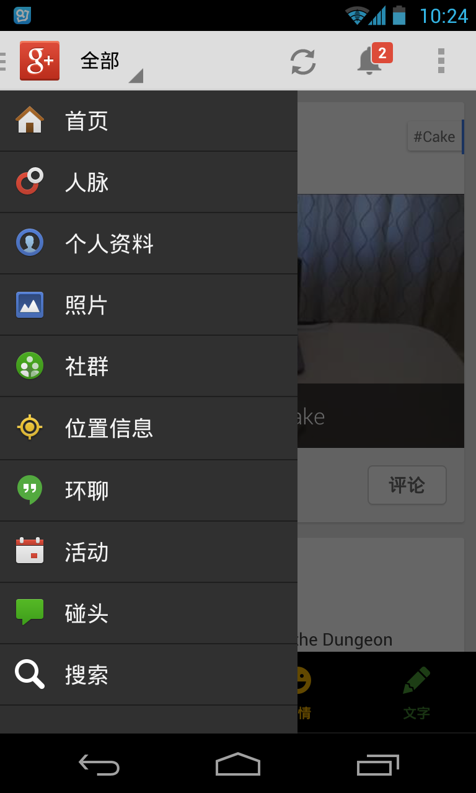从下一章开始，就需要写代码了，是不是很兴奋？